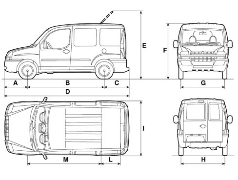

DOBLÒ - DOBLÒ CARGO - DOBLÒ COMBI - BIPOWER
- Path
- Technical Data > PROJECT DESCRIPTION AND SPECIFICATIONS > DIMENSIONS > DOBLÒ - DOBLÒ CARGO - DOBLÒ COMBI - BIPOWER
- Kind
- technical data / specifications
- Applies to
- all engines; all production periods
- Interactive page
- https://sloeber94.github.io/elrnDB-fDbl/en/#/223000050
Applies to: all engines; all production periods
The dimensions are expressed in mm.
Height is measured with vehicle unladen.
Luggage capacity (V.D.A. standards): 3.2 m (Doblò Cargo versions)3
Luggage capacity (V.D.A. standards) (Doblò ELX-SX versions):
- in normal conditions: 750 dm3
- with rear bench completed folded over: 3000 dm3
A | B | C | D | E | F | G (°) | H (°) | I | L | M | |
|---|---|---|---|---|---|---|---|---|---|---|---|
Normal wheelbase | 758 | 2566 | 835 | 4159 | 2236 | 1800 * 1820 ** | 1490 | 1496 | 1714 | 454 | 2581 |
A | B | C | D | E | F(*) | G(*) | H | I | L | M | |
|---|---|---|---|---|---|---|---|---|---|---|---|
Doblò CARGO short wheelbase (#) | 833 | 2583 | 837 | 4253 | 2345 | 1831 | 1514 | 1505 | 1722 | 454 | 2591 |
Doblò CARGO short wheelbase HIGH ROOF (#) | 833 | 2583 | 837 | 4253 | - -- | 2086 | 1514 | 1505 | 1722 | 454 | 2591 |
Doblò CARGO LONG WHEELBASE (#) | 833 | 2963 | 837 | 4633 | - -- | 1817 | 1514 | 1505 | 1722 | 454 | 2591 |
Doblò People carrier (#) | 833 | 2583 | 837 | 4253 | 2332 | 1818 | 1514 | 1505 | 1722 | 454 | 2591 |
Doblò People carrier HIGH ROOF (#) | 833 | 2583 | 837 | 4253 | - -- | 2073 | 1514 | 1505 | 1722 | 454 | 2591 |
Doblò COMBI (#) | 833 | 2583 | 837 | 4253 | 2332 | 1818 | 1514 | 1505 | 1722 | 454 | 2591 |
